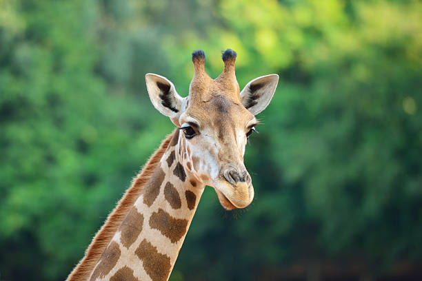

About Giraffe
Giraffe (Giraffa camelopardalis): Giraffes are iconic African mammals known for their towering height, long necks, and distinctive spotted coat patterns. These gentle giants primarily inhabit savannas and woodlands in Africa. Their diet consists mainly of leaves, buds, and flowers from tall trees, particularly acacias. To reach their food in treetops, giraffes possess an extraordinary neck that can be up to 6 feet long. They are social animals, often seen in groups called "towers," and their unique appearance makes them a popular attraction in zoos worldwide.
